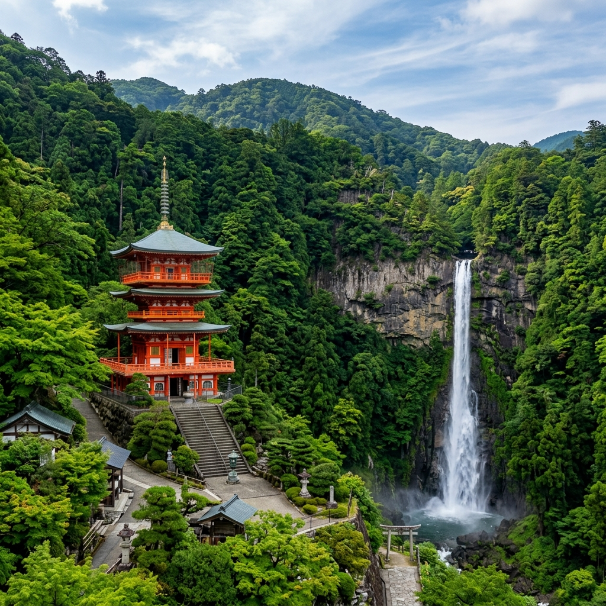

We are dedicated to raising awareness for natural disasters in Japan. Building a resilient and informed society where every individual is prepared for the unexpected.

Japan is a beautiful country, yet it remains one of the most prone to natural disasters globally, facing earthquakes, tsunamis, and typhoons.
Shizen Safety was founded by a passionate group of high school students who recognized a gap in proactive disaster awareness, particularly among the youth and non-native communities.
We believe that preparation shouldn't be an afterthought. Our mission is to educate, empower, and equip our local communities with the knowledge and tools they need to protect themselves and their loved ones when the unexpected strikes.
Making disaster knowledge accessible.
Building community networks and resilience.
Despite its beauty, Japan's unique geography makes it one of the most disaster-prone nations on Earth. Understanding these numbers is the first step toward effective preparation.
Japan experiences thousands of tremors every single year due to its location on the Pacific Ring of Fire.
Nearly a fifth of all magnitude 6.0+ earthquakes worldwide strike Japan, despite it being only 0.25% of Earth's land.
Accounting for exactly 10% of the world's total active volcanoes, posing unique ash and evacuation risks.
Because most of Japan is steep mountains, dense populations overwhelmingly live on coasts, elevating tsunami and typhoon danger.
We are a group of dedicated high school students working together to build a safer tomorrow for everyone in Japan.
Environmental Science student passionate about community safety.
Dedicated to bridging the gap between our NGO and local communities.
Strategic expert ensuring smooth delivery of our educational programs.